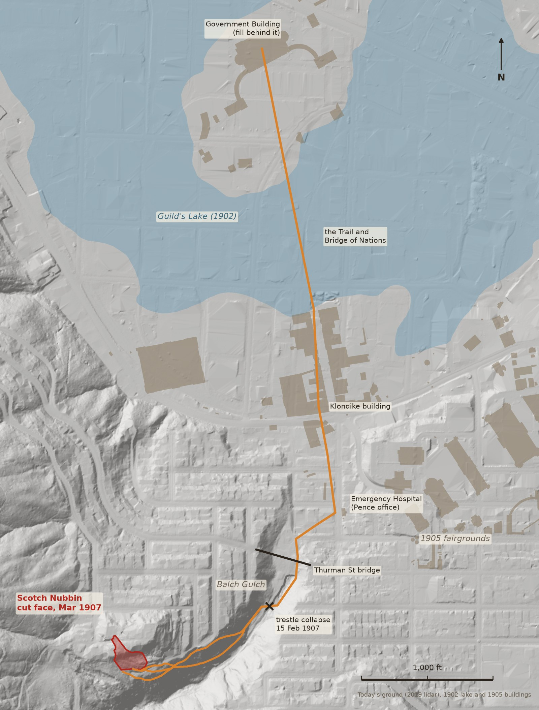
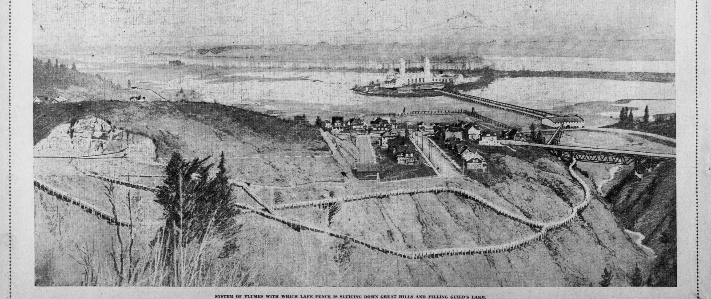
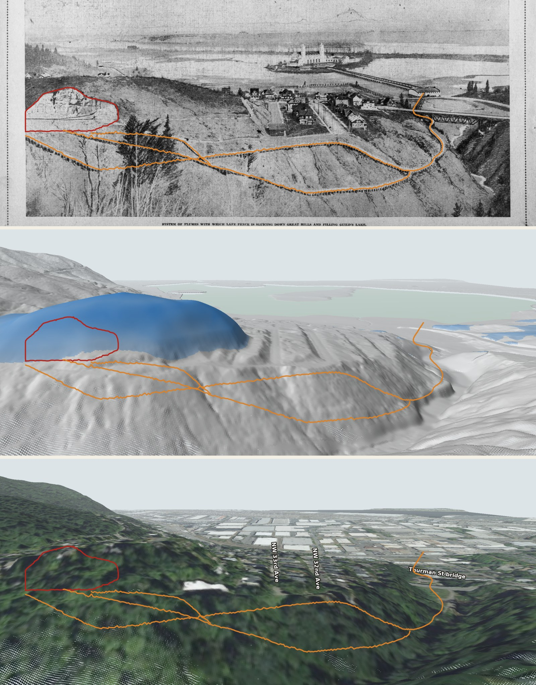

5. Washing down the Scotch Nubbin
Winter 1906-07
The Scotch Nubbin was a knoll on the Willamette Heights side of Balch Gulch, about 430 feet high. What is left of it is the house-topped knob that stands at 374 feet today: the knoll's summit, cut down by some 55 feet. Pence started on it in November 1906. On the 27th a 400-pound black-powder blast, set in two tunnels, rattled windows all over Willamette Heights. The residents protested, and the next day City Engineer Taylor revoked Pence's blasting permit (Journal, 28 Nov 1906). Pence said he would keep washing the hill down anyway; it would only cost more (Oregonian, 28 Nov 1906; Journal, 29 Nov 1906). Across the river, the St. Johns Review joked that its babies had slept through the blast (St. Johns Review, 30 Nov 1906).
Through the winter three hydraulic giants worked the knoll's top and south face. The spoil ran off in box flumes on trestles down the north wall of the gulch, across it near Savier and 31st, past Pence's office in the old Emergency Hospital, through the Klondike building and out over the Trail and the Bridge of Nations: nearly a mile, to a diked fill behind the Government Building (Figure 5.1) (Oregonian, 7 Mar 1907). The Journal counted some 35 miles of flume on three levels across the whole works (Journal, 8 Mar 1907).


The work was dangerous. On 15 February 1907 a new section of trestle, about 40 feet above the gulch near Savier Street, gave way under the men building it. H. B. Purdin, 42, lately of Hillsboro, died that afternoon; Elmer Thompson and Thomas Jewell were badly hurt (Figure 5.2) (Journal, 15 Feb 1907; Oregonian, 16 Feb 1907). Two weeks later a rock sluiced down by Pence's crew struck a policeman in Macleay Park (Journal, 3 Mar 1907).

On 11 March the Oregonian printed a picture of the whole system (Figure 5.3). It credited the winter with about 200,000 cubic yards washed into the lake and a 22-acre tract filling behind the Government Building, and Pence promised to finish the Nubbin by dry grading by August, then start on the east side of the gulch (Oregonian, 11 Mar 1907).


Matched to a model of the ground before the cuts, seen from the same spot, the hill in the picture fills the same outline as the knoll, and the cut face is eaten into its flank, while the flumes run where the gulch wall lets them (Figure 5.4). The picture's crest already sits some 30 to 40 feet below the model's summit: a winter of washing down the top. Much of what the model shows in blue was still standing in March 1907.


Not everyone saw progress. Writing for the Willamette Heights residents, Jerry Bronaugh said the company had "scarcely scratched" the Nubbin (Oregonian, 15 Mar 1907). In May, Russell & Blyth, who by then owned the land around the knoll, hired George McCabe's steam shovels to take it down; by late June the shovels were on the hill and the hydraulic work had stopped (Oregonian, 9 May 1907; Oregonian, 23 Jun 1907).